Root Canal Treatment
Saving your natural tooth from extraction, with precision, comfort, and care. No need to fear the words "root canal" anymore.
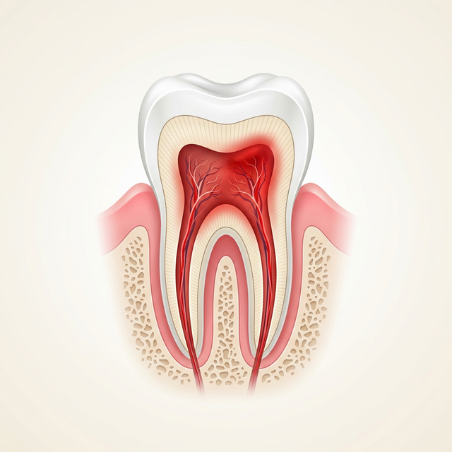
What is Root Canal Treatment?
Root canal treatment is a dental procedure performed to treat an infected or damaged tooth pulp — the soft tissue inside the tooth that contains nerves and blood vessels. When the pulp becomes infected due to decay, injury, or other factors, it can cause severe pain and swelling, and may lead to an abscess.
Root canal treatment helps save a tooth from extraction and restore its function and appearance. It is performed under local anesthesia and may require one or more visits depending on the severity of the condition.
When Is Root Canal Treatment Needed?
Understanding the progression from a healthy pulp to an infected one helps you act quickly. Each stage tells a different story, and knowing yours can save your tooth.
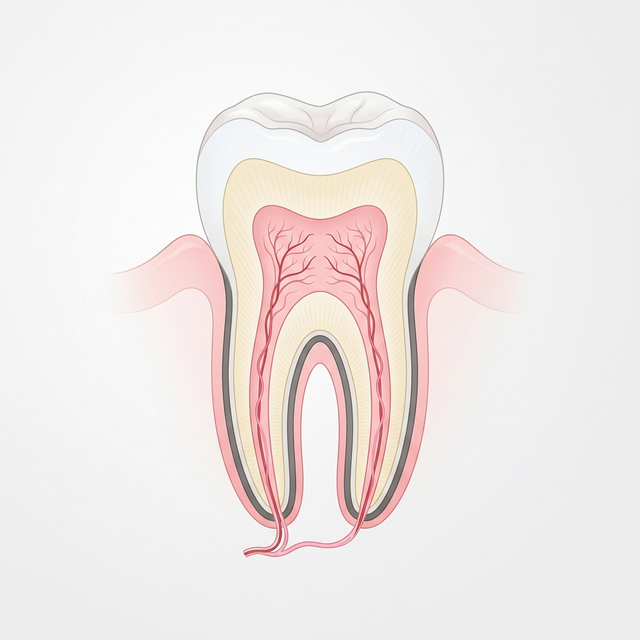
✓ Healthy Pulp
The pulp is alive, nourished, and pain-free. The tooth responds normally to temperature. No treatment needed; just regular check-ups to keep it that way.
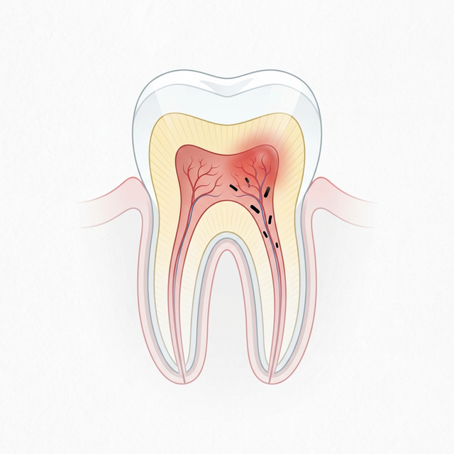
2 Inflamed / Infected Pulp
Bacteria from deep decay or a crack reach the pulp, causing infection and inflammation. You may experience lingering pain, sensitivity to hot/cold, or aching. A root canal at this stage can rescue the tooth.
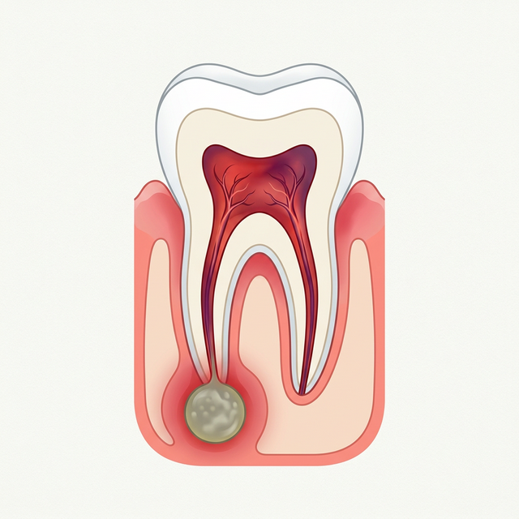
! Abscess & Bone Loss
If infection reaches the root tip, a pus-filled abscess forms. You may notice severe toothache, swelling of the face or gums, or a pimple-like bump near the tooth. Urgent root canal treatment is needed to prevent the infection from spreading systemically.
Common Conditions That Require Root Canal
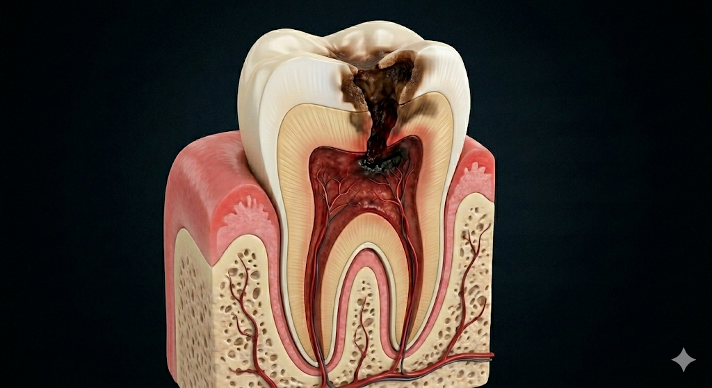
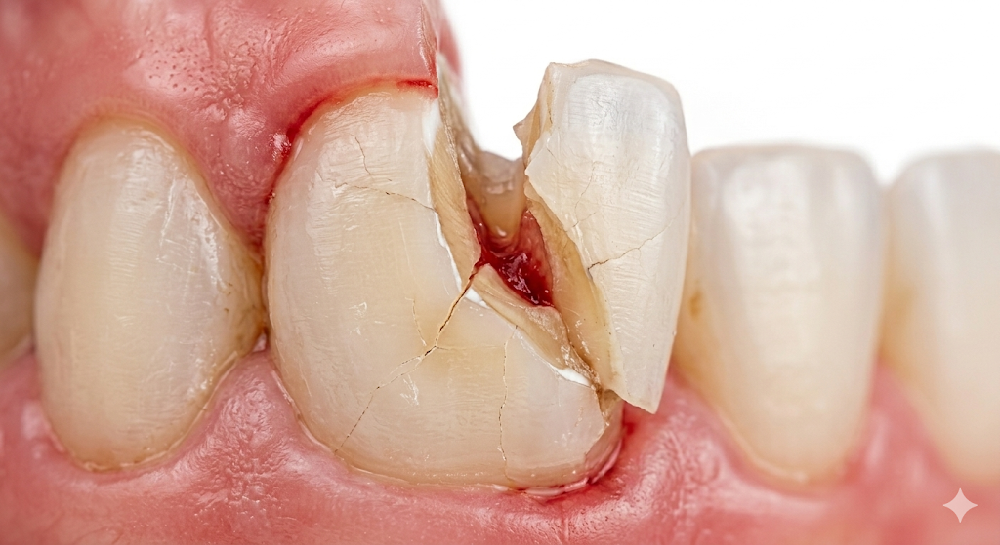
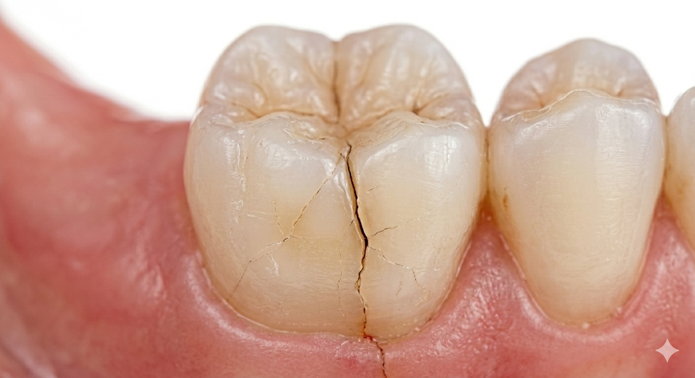
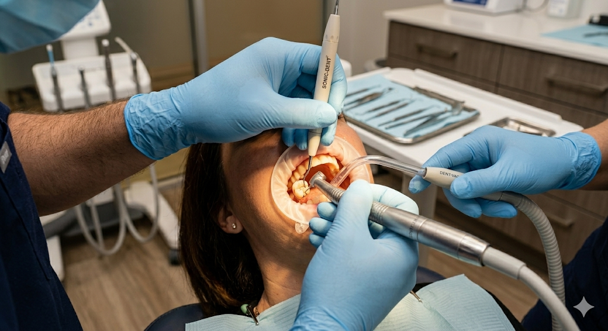
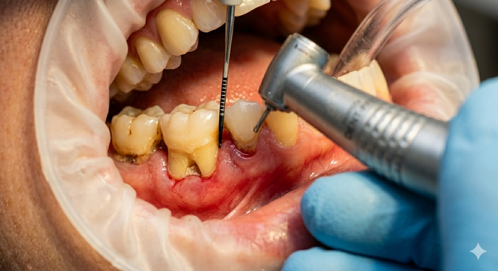
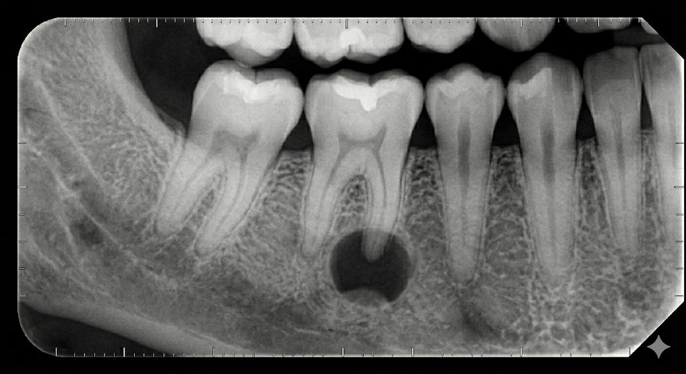
What Happens During Your Visit
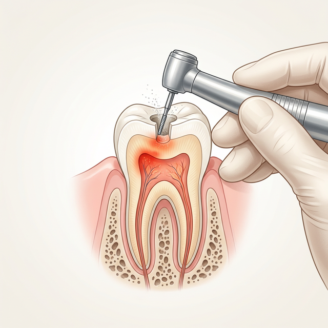
1 Numbing & Access
We start by numbing the area completely with local anesthesia, so you should feel nothing but pressure. A small opening is then made through the top of the tooth to reach the pulp chamber.
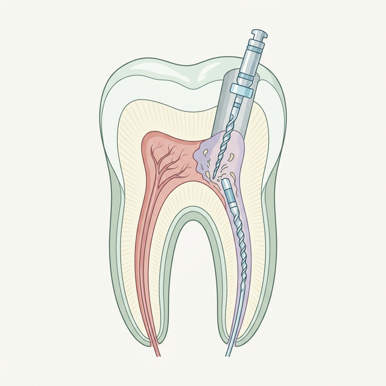
2 Cleaning & Shaping
Tiny, precise instruments are used to carefully remove all infected pulp tissue and clean the inside of each root canal. The canals are then shaped to receive the filling material.
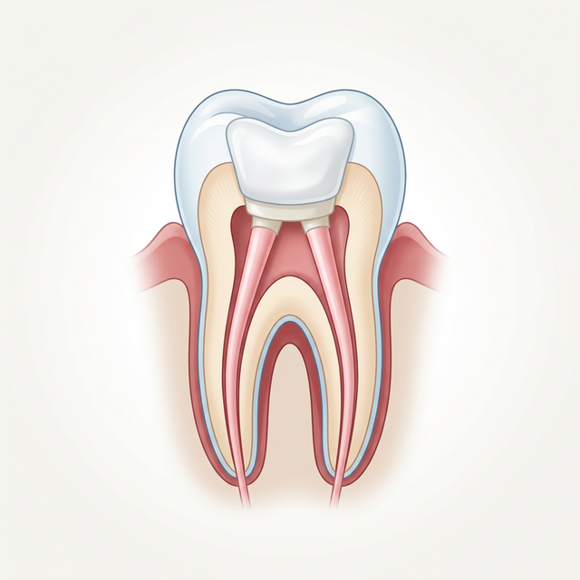
3 Sealing the Canal
The cleaned canals are filled with a biocompatible rubber-like material called gutta-percha, which seals the space completely to prevent future infection.
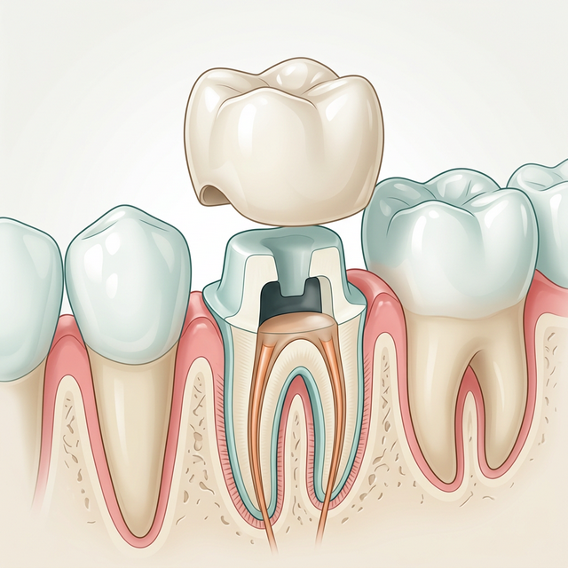
4 Restoration with Crown
A root-canal-treated tooth becomes more brittle over time. We protect it with a custom-fitted crown that restores full chewing function and makes it virtually indistinguishable from your natural teeth.
What You May Feel
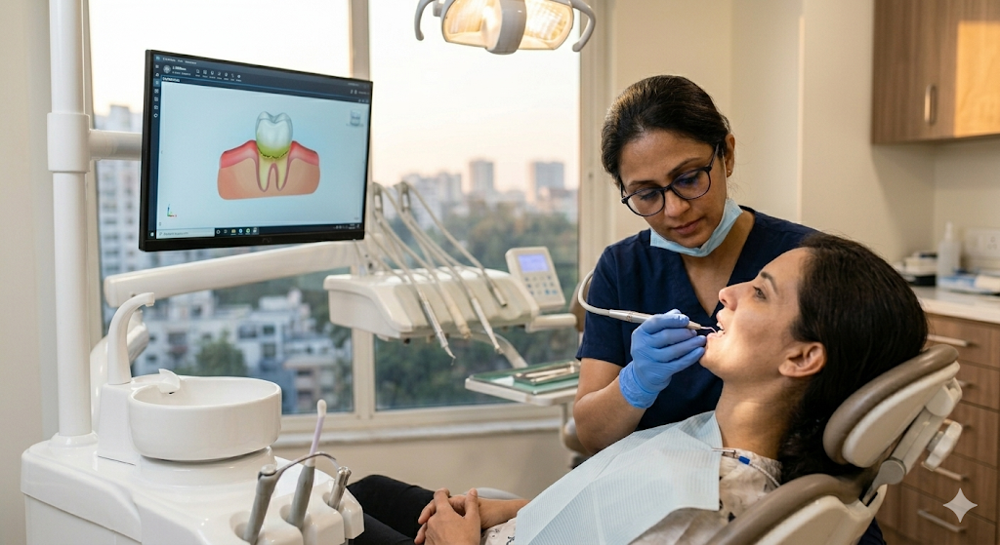
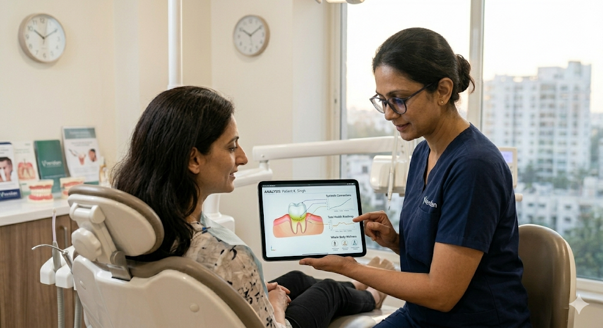
Post-Treatment Care
Following your root canal, a little care goes a long way in ensuring a smooth, complete recovery. Here's what we recommend:
- Manage discomfort: Take pain medications as prescribed to manage any sensitivity or mild aching.
- Protect the treated tooth: Avoid chewing or biting with the treated tooth until the final crown restoration is in place.
- Maintain oral hygiene: Continue brushing and flossing regularly. An antiseptic mouthwash can help reduce bacteria in the mouth.
- Mind your diet: Avoid hard, crunchy, or sticky foods that may dislodge the temporary filling or irritate the area.
- Attend follow-up appointments: These allow us to monitor healing and ensure the final crown fits perfectly for long-term function.
- Watch for warning signs: Contact us promptly if you experience persistent or worsening pain, visible swelling, or any unusual symptoms.
Frequently Asked Questions
One of the most common misconceptions in dentistry. The procedure itself is performed under local anesthesia and is generally comfortable. What root canal treatment actually does is relieve the severe pain caused by an infected pulp.
Most root canals can be completed in one to two appointments. The first visit involves cleaning out the infection and shaping the canal. The second visit (if needed) involves sealing it permanently. Crown placement is then arranged as a separate appointment.
While extraction is an option, keeping your natural tooth is always preferable. Missing teeth can cause neighboring teeth to shift, bone loss in the jaw, and affect your bite and appearance. A root canal treated tooth with a crown can last for decades, and often a lifetime.
An untreated tooth infection will not heal on its own. The bacteria can spread to the surrounding bone, neighboring teeth, and even into the bloodstream in severe cases. Early treatment is always safer, more comfortable, and less expensive.
For back teeth (molars and premolars) that bear heavy chewing forces, a crown is strongly recommended to prevent the tooth from fracturing. For front teeth, a crown may not always be required, and we will advise you based on your specific situation.
While uncommon, re-infection can occur if the seal breaks down or bacteria find a new pathway. This is why protecting the tooth with a crown and attending regular check-ups is so important. In rare cases, a retreatment procedure may be needed.
Most people feel back to normal within a few days. Mild sensitivity or soreness for 2–4 days is normal and manageable with over-the-counter pain relievers. You can typically return to your daily routine the very same day as the procedure.
Save Your Tooth. Relieve the Pain.
Don't let fear hold you back from getting the relief you need. Our gentle approach makes root canal treatment far more comfortable than you expect.
Get in Touch
We're ready to discuss your personalized care plan. Fill out the form or reach us directly.